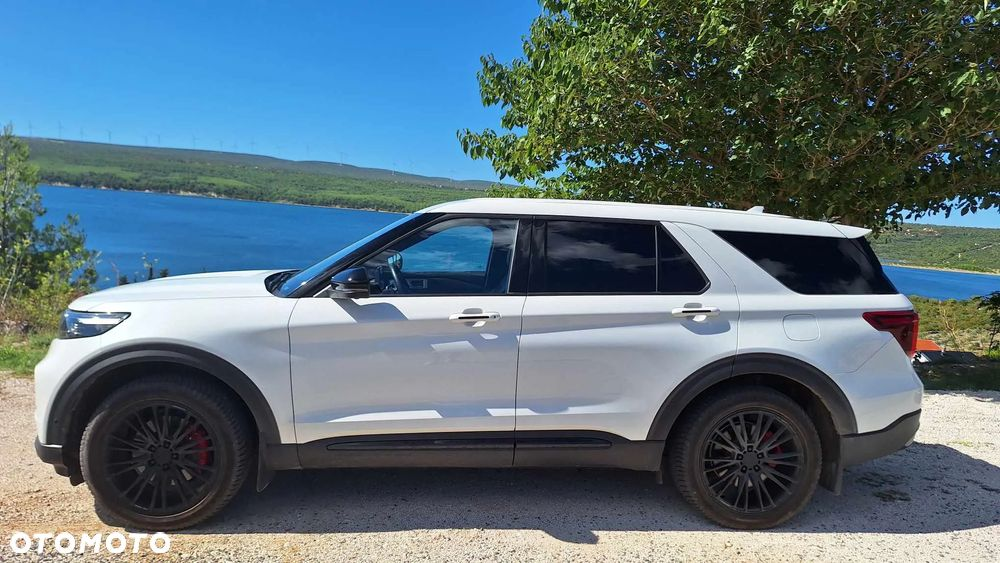
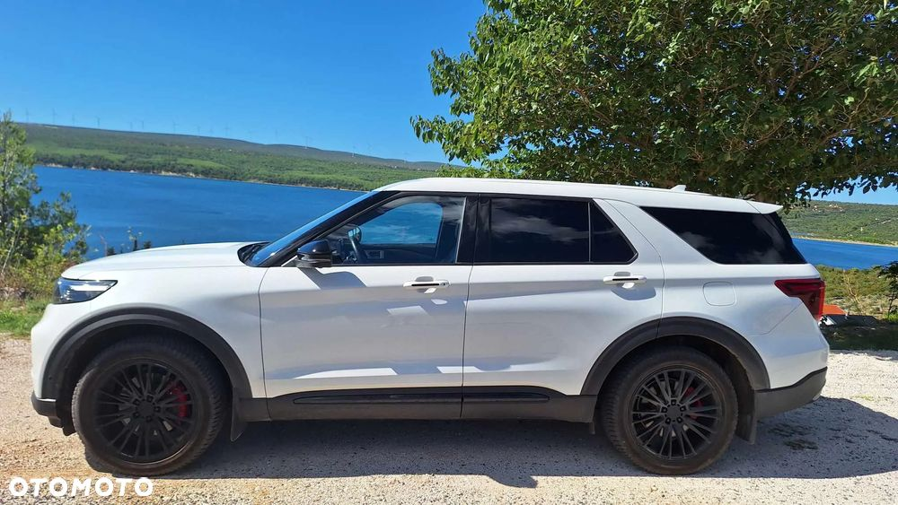
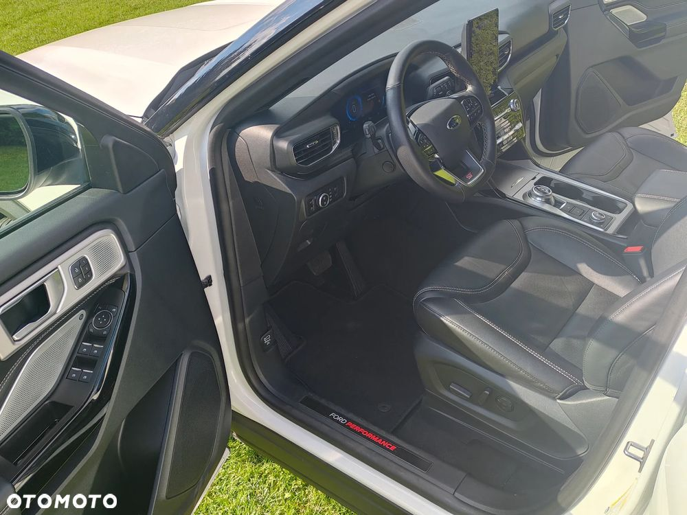
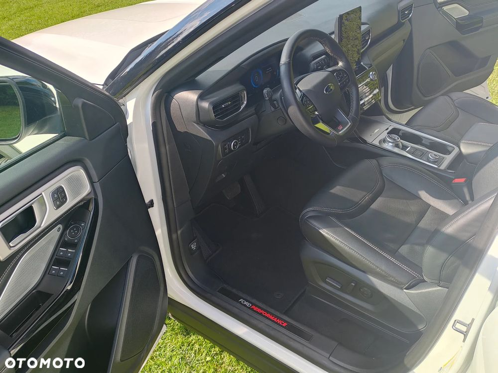
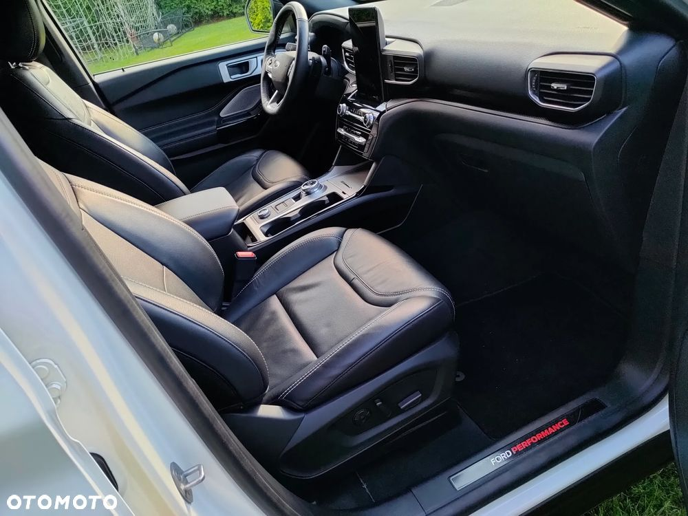
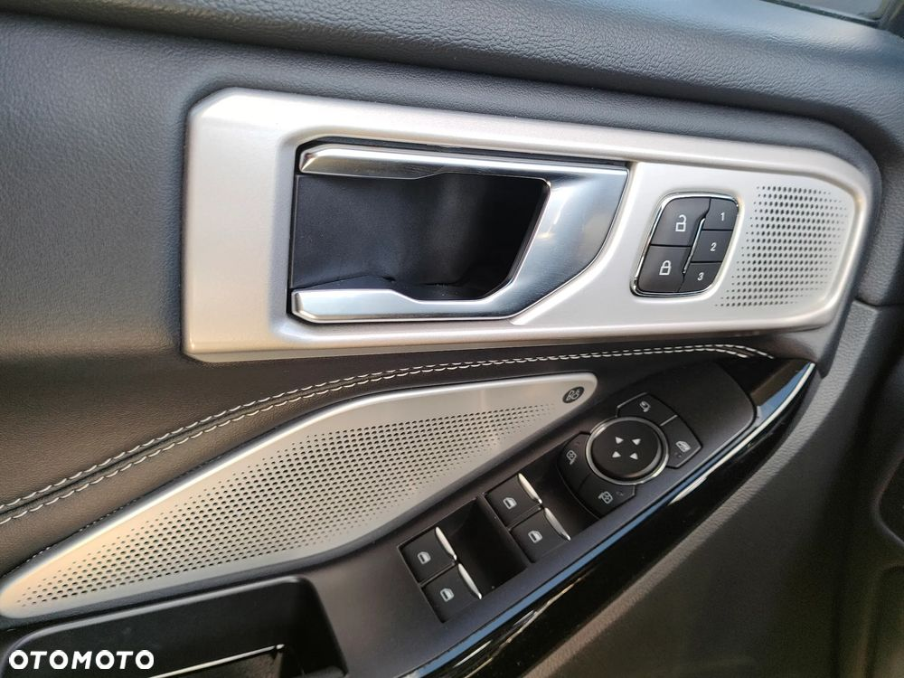
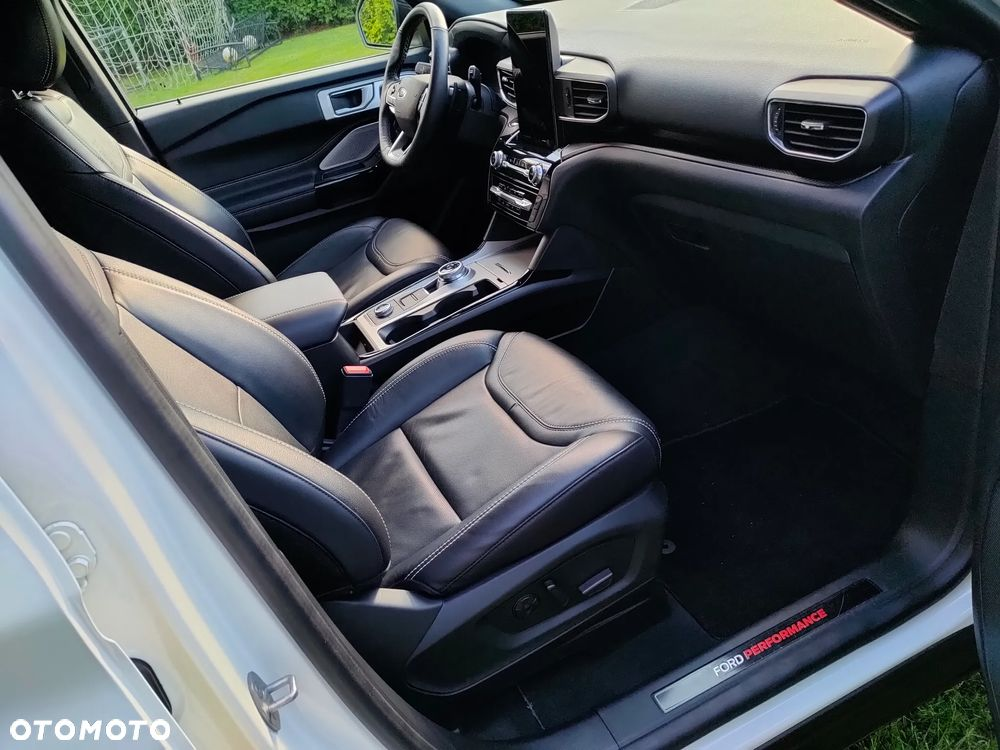
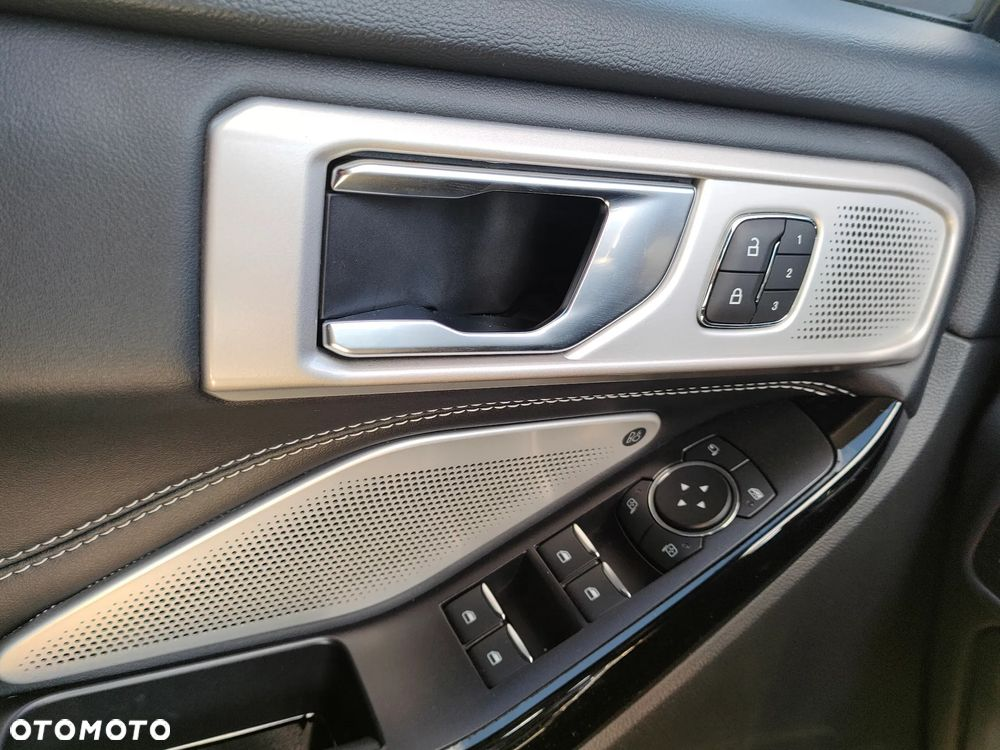

Dzień dobry,
Sprzedam Forda Explorer ST z napędem 4x4 (AWD) z silnikiem 3.0 litrowym benzyna biTurbo z automatyczną 10-cio stopniową skrzynią biegów. (wersja z Kanady).
Ford Explorer wersja ST - (najbogatsza), produkcja 09.2022 r. - wersja z czarną tapicerką skórzaną, składane, podgrzewane lusterka z funkcją BLIS - ostrzeganie o zbliżającym się innym pojeździe z lewej lub prawej strony z tyłu auta - tzw. martwy punkt (super funkcja przy wyprzedzaniu).
Bardzo dynamiczny duży SUV z ogromnym przyspieszeniem i zapasem mocy (wbija w fotel jadących :-) moc - 410 KM)
Doskonały i wydajny układ kierowniczy, fantastyczny jak na tą wielkość auta promień skrętu, komfortowe zawieszenie,
nowy zestaw aluminiowych felg na specjalne zamówienie ściągane z UK, nowy komplet opon premium: Pirelli 275/45/21.
Fordzik posiada aktywny tempomat + asystenta pasa ruchu + kilka kamer. W zasadzie samo jedzie, przyspiesza i hamuje w zależności od ustawionej prędkości i warunków na drodze (kamery 360 stopnie + czujniki przód i tył).
Wysokowydajna klimatyzacja - autem byliśmy w Hiszpanii, sprawdził się przy 40-sto stopniowych temperaturach.
6 trybów jazdy - eco, normal, śliska nawierzchnia, piasek, tryb ciągnięcia przyczepy i najfajniejszy tryb SPORT :-) full fan :-)
Explorer ST jest doskonałym krążownikiem o super osiągach i szczególnej wygodzie - 6 osób, siedzenia kapitańskie.
Fotele podgrzewane, wentylowane wyposażone w różnego rodzaju masaże, polecam, super relaks !!
W 3-cim rzędzie fotele składają się i rozkładają automatycznie, wybór L lub P lub L i P.
Autko wyposażyliśmy w homologowany w Europie hak do ciągnięcia przyczep do 2,5 tony. Wiązka haka na 7 lub 13 pinów.
Lampy full LED przód i tył, odpalanie i wyłączanie auta z kluczyka.
Dodatkowo wyposażyłem explorera w system pozwalający z dowolnego miejsca na całym świecie na odpalenie, wyłączenie silnika, weryfikację jego aktualnego miejsca w ruchu lub postoju, sprawdzenie stanu paliwa, ciśnienia opon etc. (antykradzieżowy system).
Szyba przednia podgrzewana, dodatkowa grzałka na wyposażeniu w silniku ułatwiająca uruchomienie w bardzo skrajnych warunkach niskich temperatur jakie są w Kanadzie.
Rozrywkę zapewnia duży pełnokolorowy wyświetlacz LCD z systemem multimedialnym SYNC 3.4 PL z zestawem bezprzewodowym telefonicznym BLUETOOTH + Nawigacja i menu w języku polskim + komendy głosowe polskie + multimedialna kierownica (niedawno wgrałem najnowsze mapy firmy FORD do nawigacji).
Wnętrze autka upiększa LED'owe oświetlenie - 8 kolorów do wyboru (np. niebieski, czerwony, zielony itp.).
Auto zakupione w sierpniu 2023 roku w Kanadzie z niewielką szkodą z przodu.
Ford naprawiony tylko i wyłącznie na nowych oryginalnych częściach z autoryzowanego serwisu Forda w Łodzi - Ford Store Łódź, ul. Brzezińska. Wszystkie faktury zakupu do wglądu.
Explorer przeszedł gruntowny przegląd z dostosowaniem do wymogów polskich (europejskich), wykonano pełną laserową geometrię, sprawdzony i uzupełniony został układ klimatyzacji oraz układ jezdny i kierowniczy.
Ostatnio wymieniłem po raz kolejny filtr powietrza, filtr oleju oraz olej (interwały 9-10.000 km).
Serdecznie zapraszam na obejrzenie autka i jazdę próbną w Łodzi :-)
Dla chętnych, oczywiście zgadzam się na sprawdzenie auta w dowolnym serwisie. Termin następnego badania technicznego 13.06.2026 r.
Autko w idealnym stanie. Bardzo dobrze się prowadzi.
Doskonały 6-cio osobowy krążownik z wielkim potencjałem, średnie spalanie ok. 11,5 litra / 100km
Cena nowego Forda Explorer ST - ok. 450.000 PLN
Piotr tel.
Cena podlega negocjacji
PS. poniżej link do krótkiego filmiku z serwisu YOUTUBE z "prezentacji" Forda :-)
https://youtu.be/H1auXIq0_ao
 
 
 
